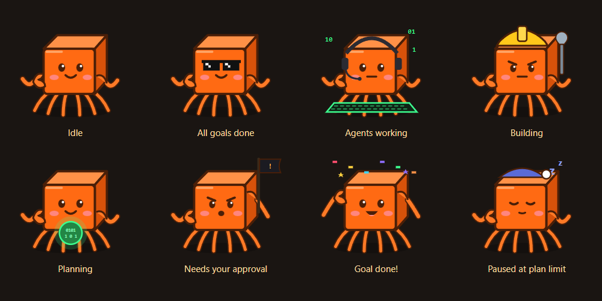
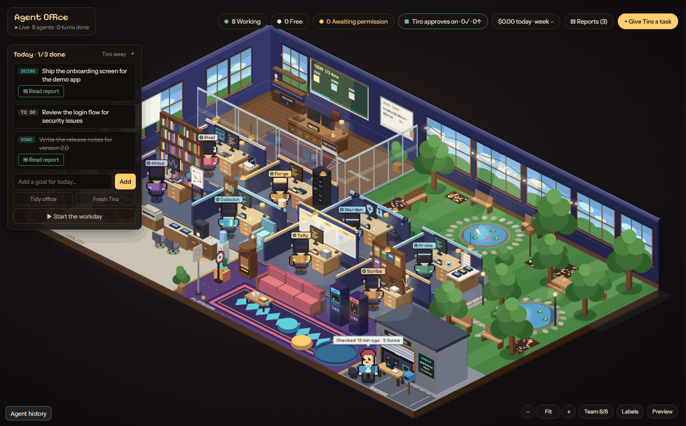
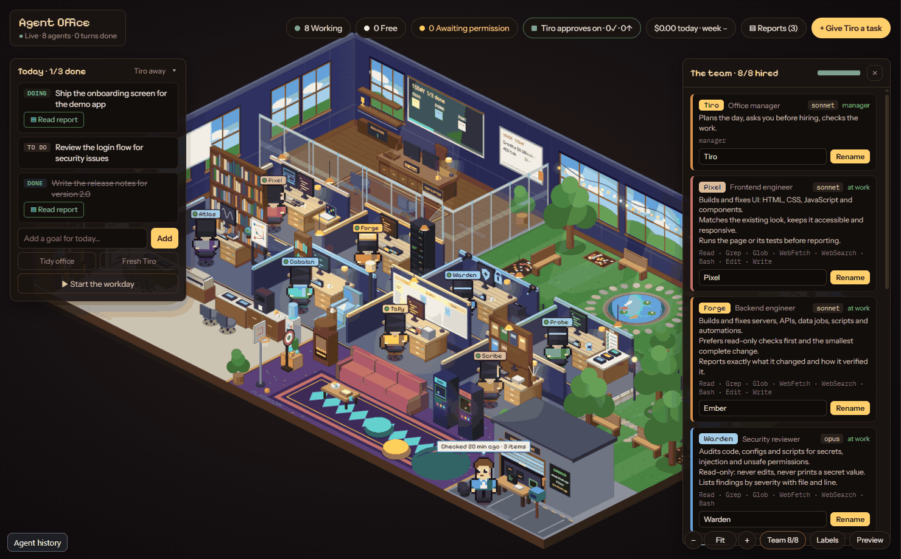
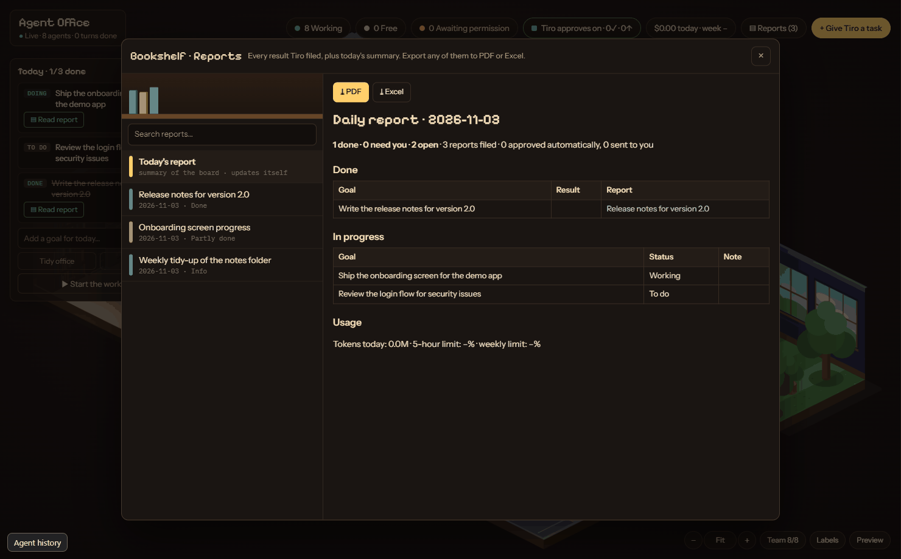
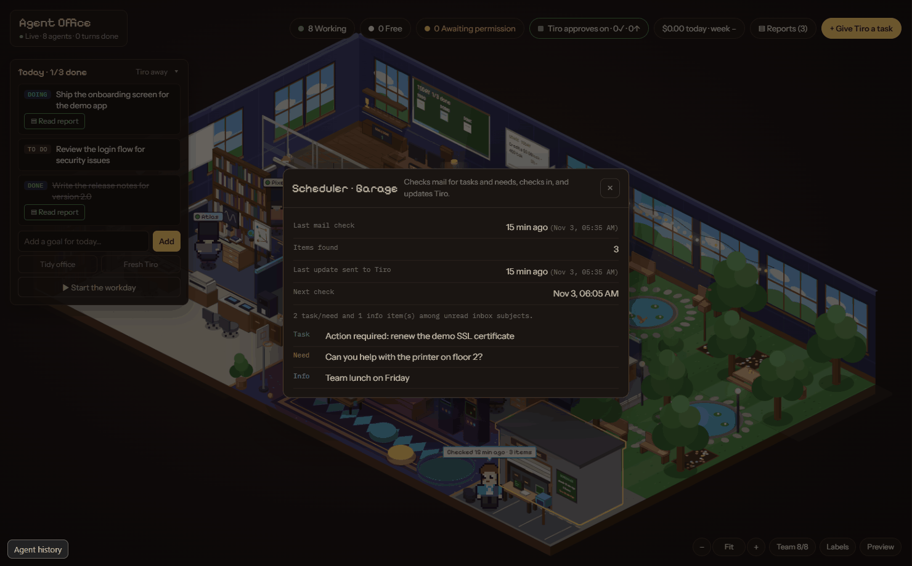
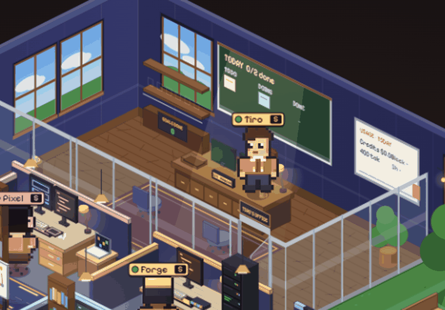

Windows app, for Claude Code users
A pixel office for your own Claude Code agents.
Tiro, a little orange cube-crab, is the office manager. Give Tiro a task. It plans the work, asks you before it hires a specialist, files reports and remembers what it learned in plain Markdown notes. The office itself spends no tokens.
- No tokens for the office
- 8 specialists
- You approve every hire
- Unsigned build

How it works
You stay in charge of every step that matters.
- Give Tiro a taskType it in the dispatch box. It lands on today's board as a goal.
- Approve the hireTiro asks for the specialist it needs. One approval buys exactly one hire.
- Agents work, you watchPrompts that Claude Code would show you appear in the dashboard and the island.
- Read the reportFindings are filed as reports, and each agent keeps notes for the next task.
Features
Everything runs locally on top of the Claude Code you already have.
Zero office tokens
Every piece of furniture reads files, switches and system data directly. Models run only while an agent works, through your own Claude Code install and plan.
Strict hiring approvals
Tiro cannot hire on its own. Every hire needs your one-shot approval, tied to the goal and the first prompt, and it expires after 10 minutes.
Your Claude Code, unchanged
Same settings, permissions, hooks, MCP servers, CLAUDE.md, skills and plugins as a plain claude run. Agent Office adds no approval rules of its own.
Renamable team
Give Tiro and each specialist a display name. Ids, folders and history stay with the agent.
Per-agent memory and history
Each agent type has its own memory and history folder. Every task starts in a fresh context, and the Agent history overlay lets you browse past work.
Reports and a Markdown vault
Color-coded reports with PDF and Excel export, a memory corkboard and editable SOPs, all plain Markdown in your own vault.
Dynamic island
A notch-style overlay with live agent status, approvals, quick actions, now playing with synced lyrics, themes and settings.
Breaker box switches
Hard switches for Tiro, autopilot, hiring and terminal approvals, plus a subscription guard that stops at your plan limit instead of spending extra-usage credits.
Security Guard
An ask-only safety net in every session: it asks before secrets leave the computer, before downloaded scripts run, and after untrusted web or mail text tries to steer an agent. It never allows or blocks anything itself.
Silhouette click areas
Furniture and characters are picked by their drawn shape, with a hover outline and depth sorting.

Meet the team
Tiro leads a fixed team of eight specialists, at most eight working at once. Tiro runs on Sonnet at medium effort and picks Haiku, Sonnet or Opus for each hire.
Pixel
Frontend engineer
sonnet
read, web, Bash, Edit, Write
Forge
Backend engineer
sonnet
read, web, Bash, Edit, Write
Warden
Security reviewer
opus
read-only (+ web, Bash)
Probe
QA and test engineer
sonnet
read-only (+ web, Bash)
Atlas
Deep researcher
opus
read-only (+ web, Bash)
Cabalan
Researcher
haiku
read-only (+ web, Bash)
Tally
Task checker and organizer
haiku
Read, Grep, Glob, Edit, Write
Scribe
SOP and document writer
sonnet
read, web, Edit, Write
Gallery
All screenshots use demo data. Select one to see it in full size.

The officeThe whole office with eight specialists at work, the goal board and the status bar. 
Approve each hireTiro asks to hire Warden. You see the goal and the reason and choose Approve hire or Deny. 
Rename your teamA role card and a rename box for every agent. 
Per-agent historyEvery agent with task counts, and the past tasks of one of them. 
ReportsThe bookshelf with a daily summary and reports, exportable to PDF and Excel. 
Scheduler stationRead-only status of the scheduler job: items found, next check, subject-only list. 
The islandThe notch-style overlay with Home, Calendar and Settings tabs. 
Click outlinesA desk outlined on hover, following its silhouette. 
Tiro at workThe office manager at the desk in the glass office.


Security model
Built so that an agent working for you cannot approve its own requests. Read the full model or the permissions page.
Local only
The server binds 127.0.0.1 and rejects any other Host header. The UI key never leaves the app process and an HttpOnly cookie, so an agent cannot approve its own requests.
Strict CSP
Pages load scripts, styles and fonts only from the app itself. React, Babel and the fonts are vendored, so nothing loads from a CDN.
Hardened windows
Context isolation and sandbox on, no Node integration, navigation locked to the local server, webviews blocked.
Verified updates
The updater accepts only a release manifest with a valid Ed25519 signature from the key pinned in the app, and checks the installer SHA-256 twice before it runs.
Security Guard
An ask-only layer that watches for secrets leaving the machine, unwanted scripts and persistence, credential stores and untrusted instructions. A safety net, not a boundary. How it works.
Approvals stay yours
Tool permissions are Claude Code's own. What would ask you still asks you. Nothing is auto-approved or timed out into an answer.
No mail access
The scheduler reads a local feed file that you produce. Agent Office has no mail credentials or network mail code.
Unsigned builds. Windows SmartScreen may ask you to confirm with More info, then Run anyway. Compare the installer's SHA-256 with the one on the download page.
FAQ
Does the office cost tokens?
No. Only agents that are working cost tokens, and only on your Claude Code plan.
Which systems does it run on?
Windows 10 or later today. macOS and Linux builds are not published yet.
Do I need Claude Code?
Yes. Install Claude Code and log in once by running claude. Agent Office uses your own install and plan.
Can an agent hire without asking me?
No. Every hire needs your one-shot approval, which expires after 10 minutes and is cleared when Tiro's session ends or resets.
Why does Windows show a SmartScreen warning?
The builds are not code-signed. Choose More info, then Run anyway, and compare the installer's SHA-256 with the one on the download page first.
Where is my data?
On your machine: ~/.claude/agent-office, your vault and Claude Code's own ~/.claude/projects. Model calls go to Anthropic through Claude Code, as in the terminal.
Does it read my email?
No. The scheduler reads a local feed file that you must produce yourself.
Can I rename agents and keep their history?
Yes. History follows the agent type, not the display name.
Is it open source?
No. It is proprietary software, all rights reserved. See the Licence section below.
More answers are on the troubleshooting and FAQ page.
Licence
Agent Office is proprietary software. All rights reserved. Nobody else may use, copy, modify, publish or distribute it unless the owner gives permission in writing. The installer shows the licence text before installing. The text is a plain-English draft that has not yet been reviewed by a lawyer. Earlier versions published under the MIT licence (1.1.0 to 1.1.4 and 1.2.5) stay available under the terms they were released with. Third-party components keep their own licences, listed in the notices that ship with the installer.
Not affiliated with Anthropic: Claude and Claude Code are Anthropic products, and Agent Office runs on your own Claude Code install and plan.